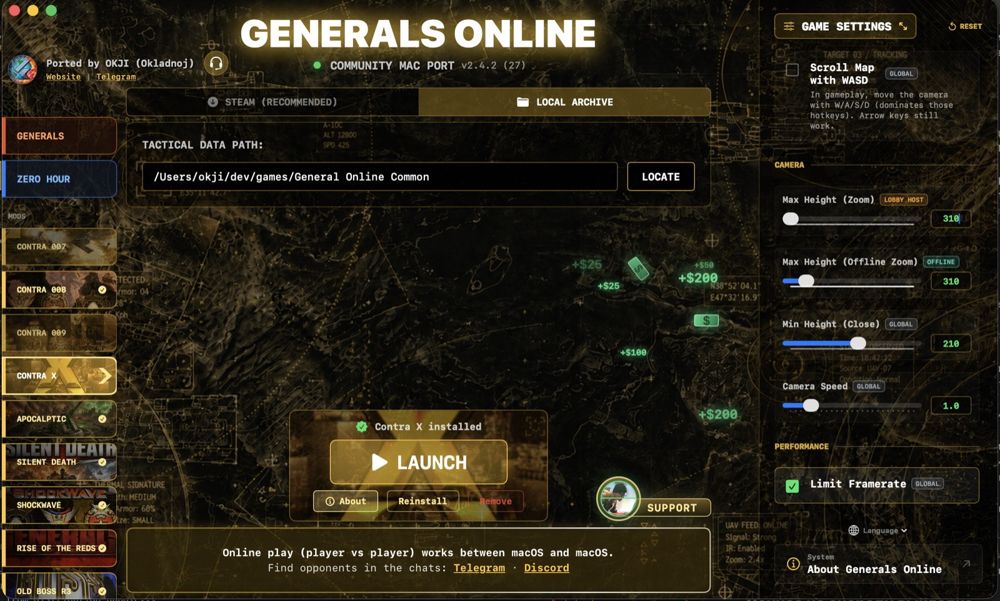
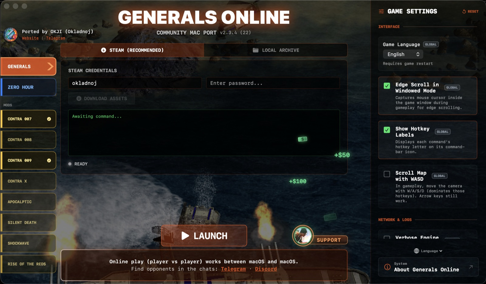
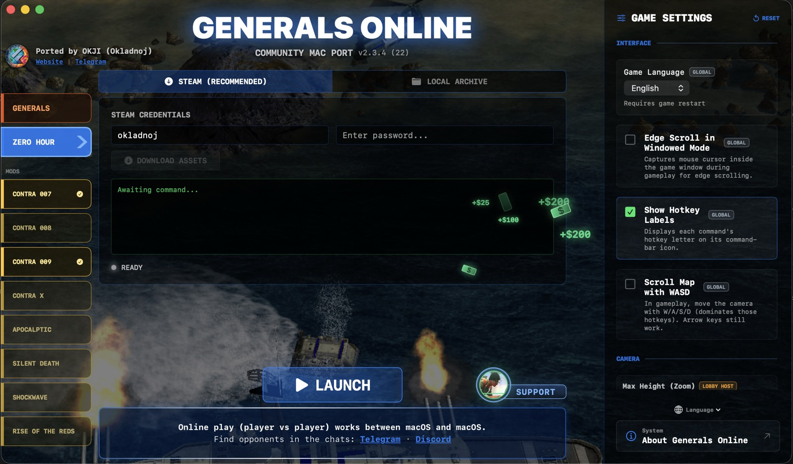
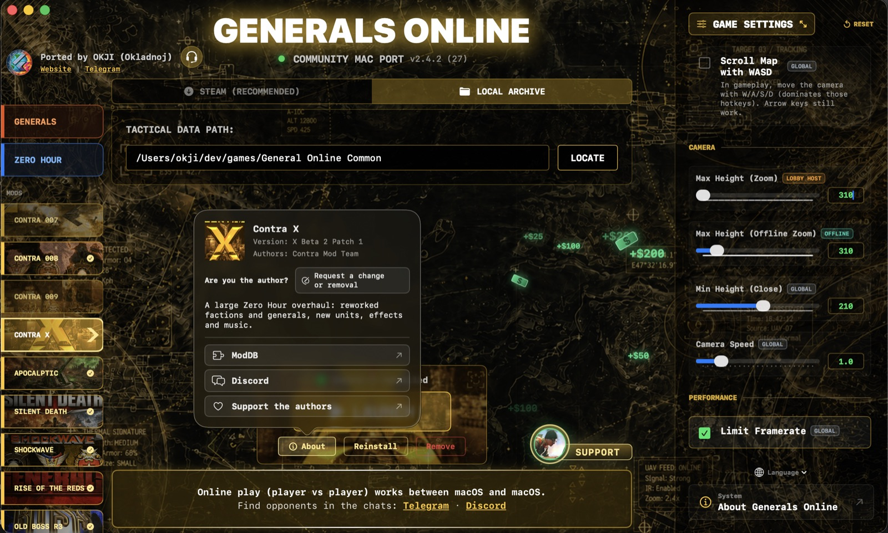
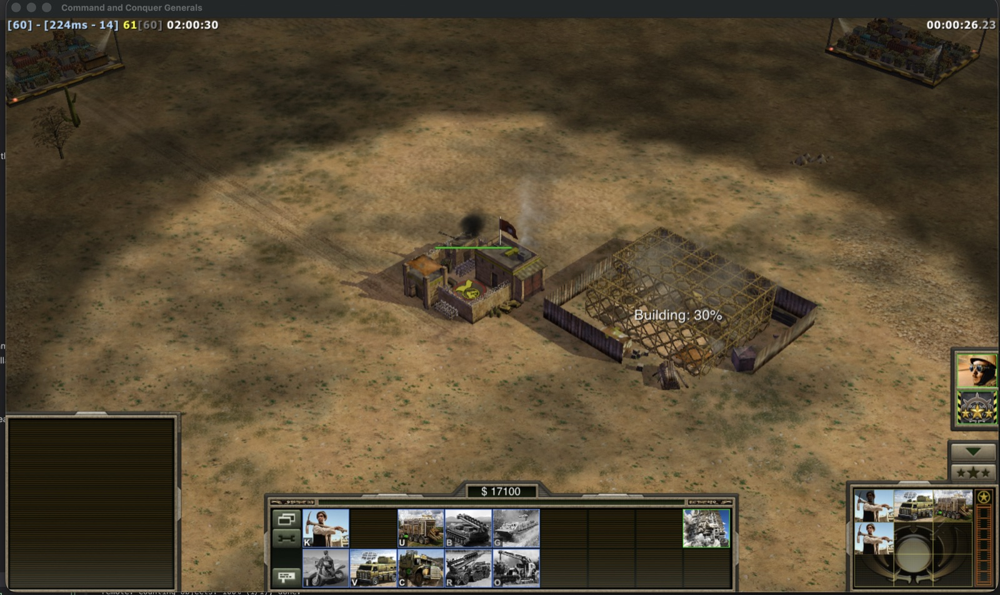
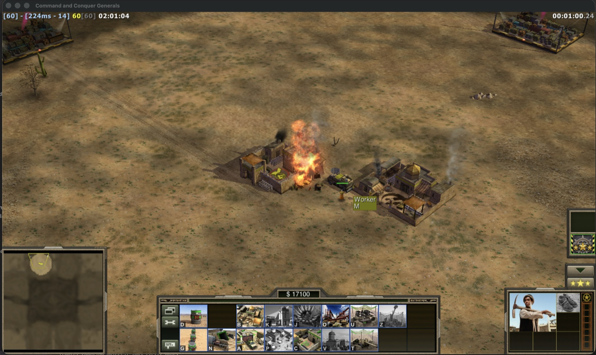
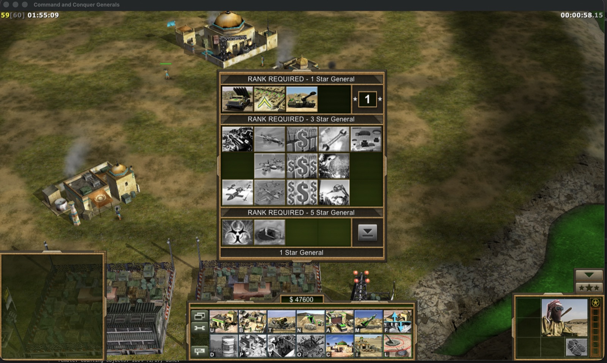

What you get
The original game you remember, rebuilt to run on a modern Mac like any other app.
Campaign and skirmish
Both Zero Hour and the original Generals: story missions, battles against bots and saved games.
Online battles
Play on the Generals Online service. Games hosted on a Mac are marked, so Mac players find each other easily.
Mods in one click
Popular community mods install and update right from the launcher, each kept separate from the main game.
Made for Apple chips
Graphics go straight through Metal, Apple's own technology, with no translation layer in between. The app itself weighs only a few megabytes.
Steam download built in
Sign in with Steam and the launcher fetches the game files for you — no Windows PC needed at any step.
Free and open
The port costs nothing. Its source code is public and builds on the game code that EA released to the community.
What you need
Three things — and about ten minutes.
- A Mac with an Apple chip — M1 or newer — and macOS 13 Ventura or later.
- Your own copy of the game. The easiest way is to buy Command & Conquer: Generals — Zero Hour on Steam; the launcher downloads it for you. An old disc or a copy from a Windows PC works too.
- The launcher. Download it and follow the step-by-step guide — it is available in 12 languages, with answers to common questions.
Screenshots
Straight from a Mac — the launcher and the game itself.














Friends on Windows?
Not yet — for now Mac players play online with other Mac players. In Generals every computer calculates the whole battle on its own, and a Mac and a Windows PC round numbers very slightly differently. Within seconds the two players would be watching two different battles.
The fix is built and has been tested in hours-long Mac-and-Windows games. It is now being reviewed by the Windows community, because it touches the heart of the game. Follow the progress here, or read the longer explanation.
How it started
A short story behind the port.
In early 2026 I wanted something simple: to play Generals online with friends — from my Mac. There was no Mac version, so I decided to build one. I was an app developer, not a game programmer, and the last time I had written C++ was at school.
The first month went into getting the game to draw anything at all through Metal. Then came the menus, the sound, the launcher and online play — and one complete restart from scratch along the way, once I understood which road actually leads online.
The biggest surprise came last: Macs and Windows PCs do math very slightly differently, and in a strategy game that is enough to split one battle into two. Fixing that grew into a project of its own. It is now shared with the whole Generals community, so that one day everyone can play together, whatever computer they have.
— okji, author of the Mac port
Join in
Find someone to play with, follow the news, or look under the hood.